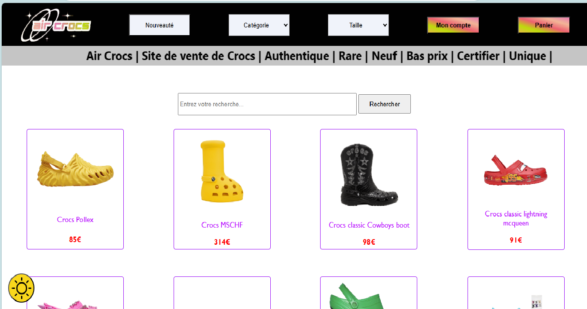
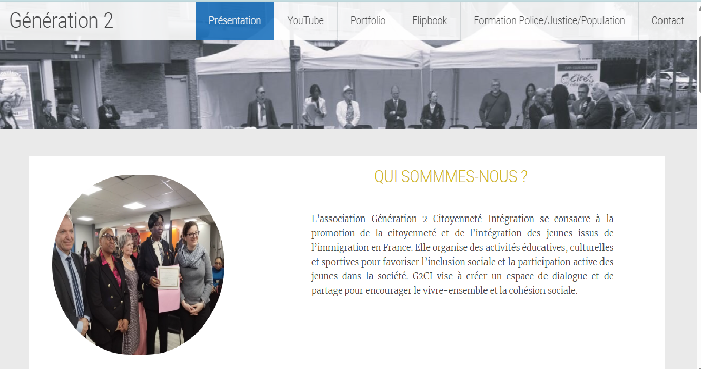
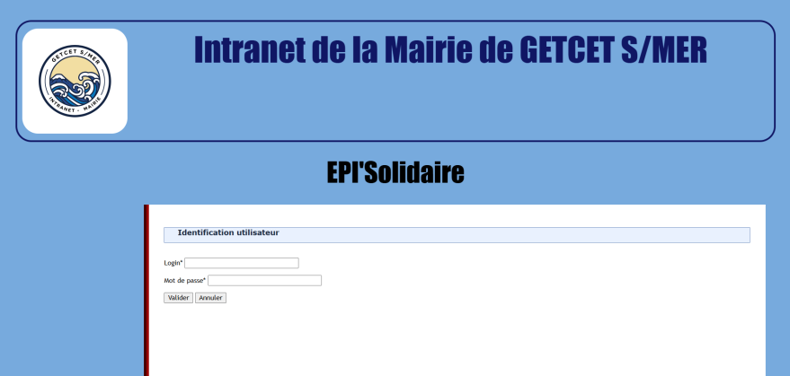

MES PROJETS RÉALISÉS
Veille Technologique

J'ai réalisé une veille technologique en HTML et CSS dans le thème de la nanomédecine. En effet, dans le domaine de la nanomédecine, la nanotechnologie est utilisée pour le diagnostic, le traitement et la prévention de différentes maladies, en mettant l'accent sur le cancer, les maladies cardiovasculaires et les maladies neurologiques. Grâce à cette veille, j'ai pu approfondir ma compréhension du potentiel à venir de la nanomédecine dans le secteur de la santé.
Date 2023
Site marchand
Au cours de ma formation, j'ai pris part à un projet en équipe de deux personnes où nous avons créé un site web. Le projet a commencé par la création d'un site web de présentation avec les languages HTML, CSS, JavaScript, qui présente les données d'une entreprise. Par la suite, chacun a amélioré ce site seul en le rendant plus actif avec du PHP, transformant ainsi le site de présentation en un site marchand offrant la possibilité d'acheter des produits en ligne. J'ai pu mettre en pratique mes compétences en développement web et en gestion de bases de données grâce à ce projet.
Date 2024
Stage
Au cours de mon stage de 7 semaines au sein de l'association Génération II, une organisation dédiée à l'intégration et à la citoyenneté, j'ai eu la chance de participer activement à leurs activités tout en développant leur site web à l'aide de WordPress. J'ai pu mettre en œuvre mes compétences en développement web tout en répondant aux besoins particuliers de l'association afin d'améliorer leur visibilité en ligne et de faciliter leur communication avec le public grâce à ce projet.
Date juin - 2024
GetCet
Nous avons élaboré une application web en PHP basée sur une architecture MVC pour la gestion d'une épicerie solidaire créée par la municipalité, dans le contexte d'un projet collaboratif. Cette application, réservée exclusivement aux intervenants autorisés (tels que les maires, secrétaires, commerçants, acheteurs et épiciers), facilite la gestion des dons, des ventes, du stock et le suivi des activités. Pour la partie front-end, nous avons utilisé les outils HTML, CSS et JavaScript.
Date oct - 2024
Fripouille

L'application Java "Fripouille" est développée en MVC et permet d'établir le catalogue des ventes pour un projet solidaire de vente de vêtements de seconde main à prix réduits. Ce projet implique plusieurs rôles : maire, secrétaires et bénévoles, et s'inscrit dans une démarche d’aide sociale et de développement durable.
Date janvier-2025
Nouvelle Vague

L'application web "Nouvelle Vague" permet aux nouveaux arrivants de s'inscrire à divers événements pour découvrir la ville et rencontrer ses habitants. Parmi les temps forts proposés : soirées d’accueil, visites en car, balades en bateau et circuits à pied guidés par un élu et un pêcheur.
Date mars-2025